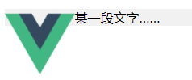
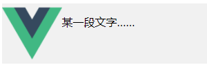
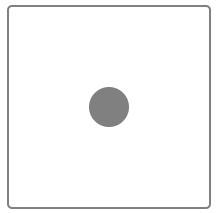
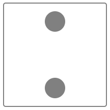
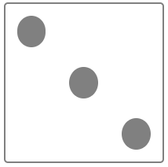
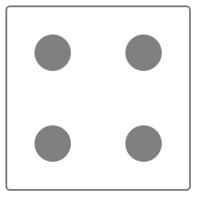
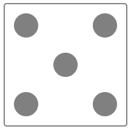
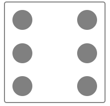

下面内容包括一些常考的、重要的 HTML&CSS 前端面试题， 是必考知识，不过关直接回家的那种
HTML 如何理解 HTML 语义化？
让人更容易读懂（增加代码可读性） 让搜索引擎更容易读懂（SEO）
块状元素&内联元素？ display: block / table；有 div、h1、h2、table、ul、ol、p 等
CSS CSS-布局 盒模型宽度计算 1 2 3 4 5 6 7 8 9 10 <style > #div1 { width: 100px; padding: 10px; border : 1px solid #ccc ; margin: 10px; } </style > <div id ="div1" > </div >
offsetwidth =（内容宽度+内边距+边框），无外边距
因此答案是122px
补充：如果让 offsetwidth 等于100px，该如何做？
在标签选择器中添加下面一行代码：
也就是说，这个时候为这个标签设置宽度的时候是包括内容、内边距、边框的。
margin 纵向重叠问题 1 2 3 4 5 6 7 8 9 10 11 12 13 14 15 <style > p { font-size: 16px; line-height: 1; margin-top: 10px; margin-bottom: 15px; } </style > <p > AAA</p > <p > </p > <p > </p > <p > </p > <p > BBB</p >
相邻元素的 margin-top 和 margin-bottom 会发生重叠
margin 负值问题
margin-top 和 margin-left 负值，元素向上、向左移动
margin- right 负值，右侧元素左移，自身不受影响
margin-bottom 负值，下方元素上移，自身不受影响
BFC 理解与应用
Block format context，块级格式化上下文
一块独立渲染区域，内部元素的渲染不会影响边界以外的元素
形成 BFC 的常见条件
float 不是 none
position 是 absolute 或 fixed
overflow 不是 visible
display 是 flex、inline-block 等
BFC 的常见应用
清除浮动
如下代码所示，此时从图片中可以看出来格式是完全乱的，文字也会贯穿到左侧，这是由于 img 设置了 float 后跑出了这个容器之内，这就是我们所说的脱离文档流，这对我们的布局是一个很大的问题，此时我们就可以通过 BFC 来解决这个问题。
1 2 3 4 5 6 7 8 9 10 11 12 13 14 15 16 17 18 19 <style > .container { background-color : #f1f1f1 ; } .left { float: left; } .bfc { } </style > <div class ="container bfc" > <img src ="https://cn.vuejs.org/images/logo.png" class ="left" style ="magin-right: 10px; width: 10%;" /> <p class ="bfc" > 某一段文字……</p > </div >

在 style 中加入一行（参见形成 BFC 的常见条件，其中有一项就是 overflow 不是 visible）
1 2 3 .bfc { overflow: hidden; /* 触发元素 BFC */ }
这个时候容器就会被这个图片撑高了，并且文字也不会贯穿到左侧。

总结：BFC的核心用意是-他是一个独立渲染区域，它内部的区域怎么去渲染都不会影响到外部。
（通过这个容器案例有一个很直观的体验，如果这个容器没有 BFC 的话，图片会跑出去，如果有 BFC 的话，即便是 img 浮动，也不会跑出这个容器，而是会把这个容器撑大；文字之所以加 BFC，是因为如果 img 浮动，那么 img 的位子将不复存在，因此文字一行会贯穿到左侧，所以需要给它加一个 BFC。注：即使 img 设置浮动，但是文字不会占据浮动标签的位置，只会环绕周围，而其左侧会被 p 标签的空白填满。）
float 布局
如何实现圣杯布局和双飞翼布局
手写 clearfix
圣杯布局和双飞翼布局的目的
三栏布局，中间一栏最先加载和渲染（内容最重要）
两侧内容固定，中间内容随着宽度自适应
一般用于 PC 网页
圣杯布局和双飞翼布局的技术总结
使用 float 布局
两侧使用 margin 负值，以便和中间内容横向重叠
防止中间内容被两侧覆盖，一个用 padding 一个用 margin
两侧使用 margin 负值，为了让两侧与中间内容横向重叠
一种方法用 padding 一种方法用 margin，两种实现的实现的方法，大同小异
圣杯布局是通过**父级元素 padding **两边留白的（中间的 center 的 width 是 100% 撑满的，并且希望它居中的，因此需要给父元素设置一个内边距 padding，这样才能满足虽然 center 是 100%，但是它也是居中的，左边右边都可以有内容，因此根据左右元素的 width 设置padding）
双飞翼布局是通过**子元素 margin **两边留白的
两种方法最终都是相当于包裹在了一个大的父元素里面。
圣杯布局 1 2 3 4 5 6 7 8 9 10 11 12 13 14 15 16 17 18 19 20 21 22 23 24 25 26 27 28 29 30 31 32 33 34 35 36 37 38 39 40 41 42 43 44 45 46 47 48 49 50 51 52 53 54 <style > html, body { min-width: 600px; } header, footer { text-align: center; font-size: 16px; } #center { background-color: blue; width: 100%; } #left { position: relative; background-color: green; width: 200px; margin-left: -100%; right: 200px; } #right { background-color: pink; width: 150px; margin-right: -150px; } #container { padding-left: 200px; padding-right: 150px; } .column { float: left; } footer { clear: both; } </style > <body > <header > this is header</header > <div id ="container" > <div id ="center" class ="column" > this is content</div > <div id ="left" class ="column" > this is left</div > <div id ="right" class ="column" > this is right</div > </div > <footer > this is footer</footer > </body >
双飞翼布局 1 2 3 4 5 6 7 8 9 10 11 12 13 14 15 16 17 18 19 20 21 22 23 24 25 26 27 28 29 30 31 32 33 34 35 36 37 38 39 40 41 42 43 44 45 46 <style > html, body { min-width: 600px; } #main { width: 100%; height: 200px; background-color: grey; } #left { width: 190px; height: 200px; background-color : #0000FF ; margin-left: -100%; } #right { width: 190px; height: 200px; background-color : #FF0000 ; margin-left: -190px; } .col { float: left; } #main-wrap { margin: 0 190px 0 190px; } </style > <div id ="main" class ="col" > <div id ="main-wrap" > this is main </div > </div > <div id ="left" class ="col" > this is left </div > <div id ="right" class ="col" > this is right </div >
手写clearfix 1 2 3 4 5 6 7 8 .clearfix:after { content: ''; display: table; /* display: block; 也可以 */ clear: both } .clearfix: { *zoom: 1; /* 兼容 IE 低版本浏览器 */ }
flex 布局 常用语法回顾
flex- direction
justify- content
align-items
flex-wrap
align-self
这几条一定要掌握并且会用！
flex 画色子 一点 注：flex 布局，设置主轴与侧轴位置水平即可

1 2 3 4 5 6 7 8 9 10 11 12 13 14 15 16 17 18 19 20 21 22 23 24 25 26 27 28 <style > .box { width: 200px; height: 200px; border: 2px solid gray; border-radius: 5px; margin: auto; display: flex; justify-content: center; } .item1 { width: 40px; height: 40px; border-radius: 50%; background-color: gray; align-self: center; } </style > <body > <div class ="box" > <div class ="item1" > </div > </div > </body >
二点 注：flex 布局，设置主轴方向为列，主轴两端对齐+侧轴居中

1 2 3 4 5 6 7 8 9 10 11 12 13 14 15 16 17 18 19 20 21 22 23 24 25 26 27 28 29 30 <style > .box { width: 200px; height: 200px; border: 2px solid gray; border-radius: 5px; margin: auto; display: flex; flex-direction: column; justify-content: space-between; align-items: center; } .item { width: 40px; height: 40px; border-radius: 50%; background-color: gray; margin: 15px; } </style > <body > <div class ="box" > <div class ="item" > </div > <div class ="item" > </div > </div > </body >
三点 注：flex 布局，两端对齐后，第二个点侧轴居中，第三个点侧轴底对齐

1 2 3 4 5 6 7 8 9 10 11 12 13 14 15 16 17 18 19 20 21 22 23 24 25 26 27 28 29 30 31 32 33 34 35 36 37 38 <style type ="text/css" > .box { width: 200px; height: 200px; border : 2px solid #ccc ; border-radius: 10px; padding: 20px; display: flex; justify-content: space-between; } .item { display: block; width: 40px; height: 40px; border-radius: 50%; background-color : #666 ; } .item :nth-child(2) { align-self: center; } .item :nth-child(3) { align-self: flex-end; } </style > <body > <div class ="box" > <span class ="item" > </span > <span class ="item" > </span > <span class ="item" > </span > </div > </body >
四点 
1 2 3 4 5 6 7 8 9 10 11 12 13 14 15 16 17 18 19 20 21 22 23 24 25 26 27 28 29 30 31 32 33 34 35 36 37 38 39 40 41 <style > .main { width: 200px; height: 200px; border : 1px solid #898386 ; border-radius: 20px; padding: 10px; box-sizing: border-box; display: flex; justify-content: space-around; } .item { width: 50px; height: 50px; background-color : #887e7f ; border-radius: 50%; } .column { display: flex; flex-wrap: wrap; justify-content: center; align-content: space-around; } </style > <body > <div class ="main" > <div class ="column" > <div class ="item" > </div > <div class ="item" > </div > </div > <div class ="column" > <div class ="item" > </div > <div class ="item" > </div > </div > </div > </body >
五点 
1 2 3 4 5 6 7 8 9 10 11 12 13 14 15 16 17 18 19 20 21 22 23 24 25 26 27 28 29 30 31 32 33 34 35 36 37 38 39 40 41 42 43 44 <style > .main { width: 200px; height: 200px; border : 1px solid #898386 ; border-radius: 20px; padding: 10px; box-sizing: border-box; display: flex; justify-content: space-around; } .item { width: 50px; height: 50px; background-color : #887e7f ; border-radius: 50%; } .column { display: flex; flex-wrap: wrap; justify-content: center; align-content: space-around; } </style > <body > <div class ="main" > <div class ="column" > <div class ="item" > </div > <div class ="item" > </div > </div > <div class ="column" > <div class ="item" > </div > </div > <div class ="column" > <div class ="item" > </div > <div class ="item" > </div > </div > </div > </body >
六点 
1 2 3 4 5 6 7 8 9 10 11 12 13 14 15 16 17 18 19 20 21 22 23 24 25 26 27 28 29 30 31 32 33 34 35 36 37 38 39 40 41 42 43 <style > .main { width: 200px; height: 200px; border : 1px solid #898386 ; border-radius: 20px; padding: 10px; box-sizing: border-box; display: flex; justify-content: space-around; } .item { width: 50px; height: 50px; background-color : #887e7f ; border-radius: 50%; } .column { display: flex; flex-wrap: wrap; justify-content: center; align-content: space-around; } </style > <body > <div class ="main" > <div class ="column" > <div class ="item" > </div > <div class ="item" > </div > <div class ="item" > </div > </div > <div class ="column" > <div class ="item" > </div > <div class ="item" > </div > <div class ="item" > </div > </div > </div > </body >
align-items 在伸缩容器上使用它，伸缩容器内部所有的元素都一致地受制于 align-items 的值。 但是有些时候，我们希望伸缩容器内部某个元素在侧轴上的排列方式有所差异。此时就不能使用 align-items，因为 align-items 作用于整体。我们希望作用于部分。这就是 align-self 的发挥场地。
注：align-items 为弹性容器中所有项目设置缺省对齐属性，包括匿名弹性项目。
align-self 可以为单独的弹性项目设置对齐来覆盖缺省值。
CSS-定位 absolute 和 relative 分别依据什么定位？ 不论面试还是开发中非常重要的问题！
relative 依据自身定位，并且对外界元素没任何影响
居中对齐有哪些实现方式？ CSS 面试中 90% 会考的题目！
水平居中
inline 元素：text- align:center
1 2 3 4 5 6 7 8 9 10 11 12 13 14 15 16 17 18 19 20 21 22 23 24 25 26 27 28 29 30 31 32 33 34 35 36 37 38 39 40 41 42 43 44 45 46 47 48 49 50 51 52 53 <style type ="text/css" > .container { border : 1px solid #ccc ; margin: 10px; padding: 10px; } .item { background-color : #ccc ; } .container-1 { text-align : center ; } .container-2 .item { width: 500px; margin : auto ; } .container-3 { position: relative; height: 100px; } .container-3 .item { width: 300px; height: 100px; position : absolute ; left: 50%; margin-left: -150px; } </style > <body > <div class ="container container-1" > <span > 一段文字</span > </div > <div class ="container container-2" > <div class ="item" > this is block item </div > </div > <div class ="container container-3" > <div class ="item" > this is absolute item </div > </div > </body >
垂直居中
inline 元素：line-height 的值等于 height 值
1 2 3 4 5 6 7 8 9 10 11 12 13 14 15 16 17 18 19 20 21 22 23 24 25 26 27 28 29 30 31 32 33 34 35 36 37 38 39 40 41 42 43 44 45 46 47 48 49 50 51 52 53 54 55 56 57 58 59 60 61 62 63 64 65 66 67 68 69 70 71 72 73 74 75 76 77 78 79 80 81 82 83 84 85 <style type ="text/css" > .container { border : 1px solid #ccc ; margin: 10px; padding: 10px; height: 200px; } .item { background-color : #ccc ; } .container-1 { text-align : center ; line-height : 200px ; height: 200px; } .container-2 { position: relative; } .container-2 .item { width: 300px; height: 100px; position: absolute; left: 50%; margin-left : -150px ; top: 50%; margin-top: -50px; } .container-3 { position: relative; } .container-3 .item { width: 200px; height: 80px; position: absolute; left: 50%; top: 50%; transform : translate (-50 %, -50 %) } .container-4 { position: relative; } .container-4 .item { width: 100px; height: 50px; position: absolute; top: 0; left: 0; bottom: 0; right: 0; margin : auto ; } </style > <body > <div class ="container container-1" > <span > 一段文字</span > </div > <div class ="container container-2" > <div class ="item" > this is item </div > </div > <div class ="container container-3" > <div class ="item" > this is item </div > </div > <div class ="container container-4" > <div class ="item" > this is item </div > </div > </body >
CSS-图文样式 line- height 如何继承？ 如下代码，p 标签的行高将会是多少？
1 2 3 4 5 6 7 8 9 10 11 12 13 14 <style type ="text/css" > body { font-size: 20px; line-height: 200%; } p { font-size: 16px; } </style > <body > <p > AAA</p > </body >
答案：40px（20px * 200% = 40px）
写具体数值，如30px，则继承该值
1 2 3 4 5 6 7 8 9 10 11 12 13 <style type ="text/css" > body { font-size: 20px; line-height: 50px; } p { background-color : #ccc ; font-size: 16px; } </style >
写比例，如2/1.5，则继承该比例
1 2 3 4 5 6 7 8 9 10 11 12 13 <style type ="text/css" > body { font-size: 20px; line-height : 1.5 ; } p { background-color : #ccc ; font-size: 16px; } </style >
写百分比，如200%，则继承计算出来的值（考点）
1 2 3 4 5 6 7 8 9 10 11 12 13 <style type ="text/css" > body { font-size: 20px; line-height: 200%; } p { background-color : #ccc ; font-size: 16px; } </style >
CSS-响应式 rem 是什么？ rem 是一个长度单位
px，绝对长度单位，最常用
em，相对长度单位，相对于父元素，特别不常用
rem，相对长度单位，相对于根元素（html），常用于响应式布局
1 2 3 4 5 6 7 8 9 <style type ="text/css" > html { font-size: 100px; } div { font-size : 0.16rem ; } </style >
rem 可以应用在 CSS 中除了根元素以外的任意属性长度上（如 width、height、line-height、padding 等）
响应式布局的常见方案？
1 2 3 4 5 6 7 8 9 10 11 12 13 14 15 16 17 18 19 20 21 22 23 24 25 26 27 28 29 30 31 32 33 34 35 36 <style type ="text/css" > @media only screen and (max-width: 374px ) { html { font-size: 86px; } } @media only screen and (min-width: 375px ) and (max-width: 413px ) { html { font-size: 100px; } } @media only screen and (min-width: 414px ) { html { font-size: 110px; } } body { font-size : 0.16rem ; } #div1 { width: 1rem; background-color : #ccc ; } </style > <body > <div id ="div1" > this is div </div > </body >
关于比例：375px / 320px = 100px / 86px，100px / 110px = 375px / 414px，以这个为依据（实际应用中尺寸根据这三个就已经可以适配安卓与苹果，如果需要再精细就按需求增加媒体查询）
CSS-响应式-vw/vh
关于 CSS 动画 并不是面试的重点，除非面试是一个专门做动画的职位